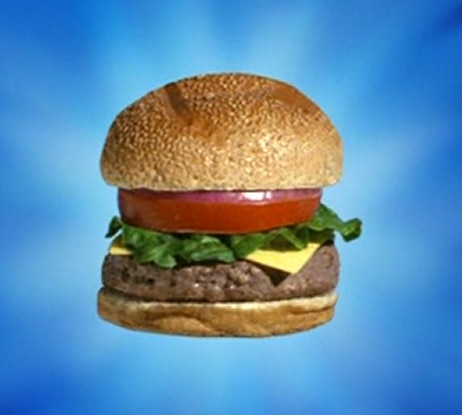

Krabby Patty

Description
Presenting... the Krabby Patty, a rare delicacy from the depths of Bikini Bottom.
Although the secret formula is unknown to this day, this recipe provides a close replica of the infamous culinary spectacle.
Ingredients
- Bun
- Patty
- Cheese
- Lettuce
- Pickles
- Tomato
- Bun
Steps
- Put bottom bun on plate
- Put tomato on top of bottom bun
- Put pickles on top of tomato
- Put lettuce on top of pickles
- Put cheese on top of lettuce
- Put patty on top of cheese
- Put top bun on top of patty